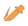

Herrscher of the Void
Ранг валькирии:
Тип:
Вид урона:
Herrscher of the Void
1-я последовательность: 60% физиурона.
2-я последовательность: 2x40% физиурона.
3-я последовательность: Herrscher of the Void наносит AOE 150% физурона, и призывает космическое ядро на позиции противника.
4-я последовательность: 3x40% физурона.
5-я последовательность: Вызывает кратковременную тюрьму целевому противнкиу. Эпицентр взрыва притягивает врагов. Наносит 80% + 6x40% физурона по области и вызывает космическое ядро на позиции врага.
космическое ядро созданное Herrscher of the Void, взрывается после призыва, нанося 100% Физурона (расчеты Урона основаны на характеристиках Херршера Пустоты).

Когда Herrscher of the Void входится в форму херршера она увеличивает общий урон на 30%, и дополнительно на 30% против врагов механического типа
Когда Herrscher of the Void находится в форме херршера: Взрыв в позиции призыва космического ядра наносит 350% физиурона.
Когда Herrscher of the Void находится в форме херршера: последний удар в последовательности базовой атаки также будет медленно притягивать противников в радиусе 10 метров.
Перемещайтесь через ткань пространства-времени, чтобы уклоняться от вражеских поподаний.
Когда Herrscher of the Void использует уклонение она вызывает космическое ядро и запускает локальное замедление времени, останавливая действия противника в пределах области действия на 3 секунды. КД: 20с.
После уклонения нажмите кнопку атаки в течение короткого периода времени, чтобы нанести 3-й удар 5-й последовательности.
Когда на пути Phase Shuttle есть враги, эффекты уклонения срабатывают без уклонения. Сокращает время отката Phase Shuttle на 3,0 секунды.
За каждого врага, на которого действует Замедление времени, Herrscher of the Void получает дополнительно 10% физического урона на 10 секунд. Максимальное количество стаков: 3.
Когда локальное замедление времени закончится, активируется Time Fracture на 2,0 секунды.
Закон Пустоты: Команда получает 30% крит урона и 10% крит шанса.
После выхода заряд Херршера восстанавливается до 120.
Команда получает 40% крит урона и 15% крит шанса.
Когда Herrscher of the Void нахрдится в форме херршера, взрыв космического ядра наносит 18% бонусного физурона и 24% дополнительного бонусного урона щитам.
В форме херршера Herrscher of the Void расходует 24 энергии каждые 0,5 с. Может быстро передвигаться. Может выполнить 2 последовательных уклонения. Слегка получает прерывание и игнорирование прерывания. Расширяется область действия взрыва космического ядра.
Базовая АТК в форме Херршера становится АТК с тремя последовательностями:
1-я последовательность: 3x50% физического урона.
2-я последовательность: 4x50% физического урона.
3-я последовательность: Наносит на цель кратковременную тюрьму; Эпицентр взрыва притягивает противников в пределах небольшого AOE, нанося 80% + 6x50% ATK физурона и призывает космическое ядро на позиции противника.
Каждая повторная атака по одной цели (и не поражает других врагов) получает 1% шанс критического удара (максимум: 20%). Закон Бездны сбрасывается, если не атаковал в течение 3 секунд или не сменил цель.
За каждое вызванное космическое ядро персонаж получает на 15% меньше косвенного урона в течение 10 секунд. Максимальное количество стаков: 3. Каждый стак сбрасывает длительность.
Заряженная атака помечает врага на 10 секунд. атаки Herrscher of the Void по отмеченным врагам увеличивают урон на 15% (независимый эффект).
Имея не менее 240 Herrscher энергии, нажмите и удерживайте кнопку ATK во время 5 последовательности базовой ATK, чтобы высвободить заряженную ATK.
Максимальное значение herrscher энергии - 480. Каждое вызванное космическое ядро восстанавливает 60 herrscher энергии. Заряженная атака: Временно заключает цель в тюрьму времени и наносит 600% AOE физурона, а также переводит Herrscher of the Void в форму херршера.Полный заряд herrscher энергии: Наносит дополнительно 400% физурона.
Взрыв на позиции призыва Космического Ядра увеличивает физический урон на 50%.
Заряженные атаки получают 60% множителя общего урона по незащищенным врагам.
Когда QTE завершается, вы получаете 60 herrscher энергии 20% дополнительной скорости атаки на 10 секунд.
Слезы открывают ткань пространства-времени, высвобождая поток сырой энергии.
Herrscher of the Void Наносит 9-12 ударов в большом AOE перед персонажем, каждый удар наносит 300% физического урона и накладывает Time Lock на врагов в вокруг персонажа на 3 секунды.
SP cost: 125
QTE: срабатывает при прорыве щита или когда на противнике действует замедление времени. Наносит 10x100% физурона.
Удары Void Unleashed повышают вероятность критического поподание на 30,0% против врагов с уровнем здоровья выше 50%.
увеличивает на 50% общий урон против противников с уровнем здоровья ниже 50%.
Использование ульты даёт 360 herrscher энергии.